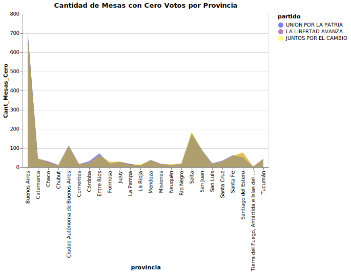

Trabajo Práctico Final InfoViz - Grupo 7
¿Como fue la distribución por fuerza politica en las paso por provincia?
¿Como fue la distribución por fuerza politica en las generales por provincia?
¿Cual fueron los tipos de votos nulos en las generales por provincia?
¿Cual fue el resultado de las elecciones generales para cargos nacionales en valor absoluto en las generales? (Corte de Boletas)
¿Cual fue el resultado de las elecciones generales para cargos nacionales en porcentaje en las generales?
¿Cual fue la cantidad de mesas con cero votos para los partidos mayoritarios en las generales?
¿Cual fue la cantidad de mesas con cero votos para los partidos mayoritarios por provincia en las generales?

¿Como fue la distribución de votos a nivel pais en las generales?
¿Como fue la distribución de votos a nivel pais para las fuerzas que entraron al Ballotage?
¿Qué pasó con las principales fuerzas entre las PASO y la primera vuelta?